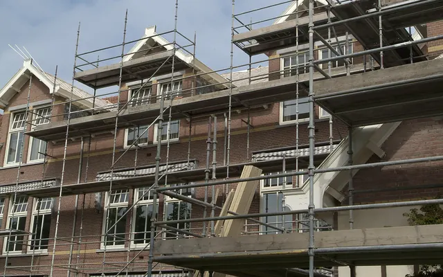
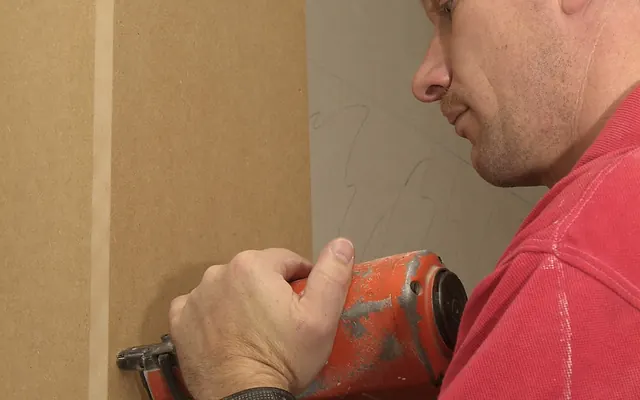
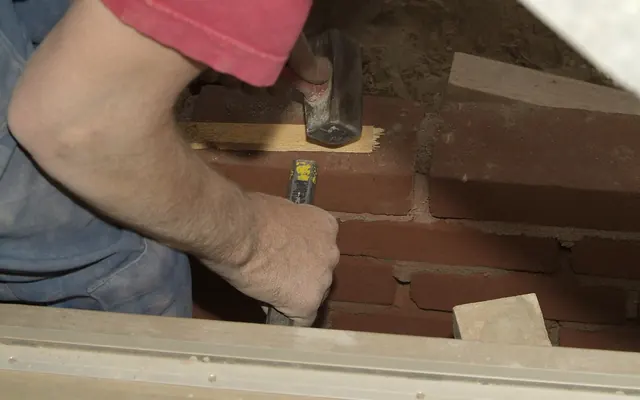
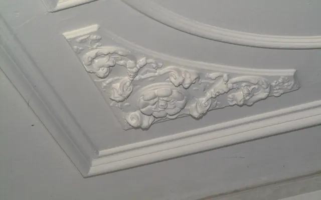
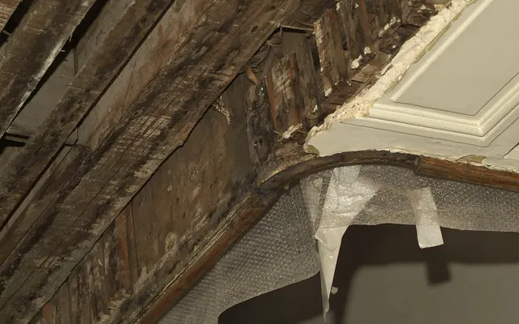
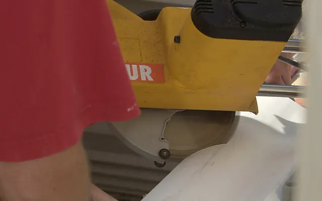
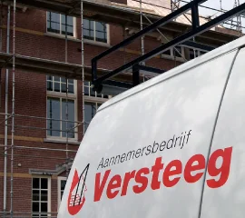

Renovatie en onderhoud
Gebouwen in topconditie houden. Groot onderhoud en renovatie van bestaande panden, ook als er gewoon doorgewerkt wordt.
- Onderhoud en renovatie
- Badkamers en keukens
- Tegelwerk, schilderwerk, elektra
Home / Diensten
Alles wat Versteeg doet aan bestaande gebouwen, en de servicedienst voor spoed.
Renovatie, onderhoud en verbouw voor overheid, onderwijs, vastgoedbeheerders en particulieren. Vaak onder tijdsdruk, terwijl het gebouw volledig in bedrijf blijft.

Gebouwen in topconditie houden. Groot onderhoud en renovatie van bestaande panden, ook als er gewoon doorgewerkt wordt.

Een kantoor, school of woning anders indelen. Van uitbouw tot plafonds en vloerbedekking.

Door timmerlieden in eigen dienst. Van kozijnen tot sloten vervangen.

Door metselaars in eigen dienst, ook bij herstel van bestaand metselwerk.

Wanden en plafonds strak, ook in panden met ornamenten.

Advies en behandeling. Herstel met erkende chemische producten.

Meubels en interieurdelen op maat uit de eigen timmerwerkplaats, in hout, metaal of kunststof.

Bij een noodtoestand, calamiteit of andere spoedeisende situatie staat de serviceafdeling klaar. 24 uur per dag, 365 dagen per jaar.
Wat Versteeg niet doet: grootschalige utiliteits- en woningbouw. De kracht zit in bestaand vastgoed: verduurzaming, onderhoud, herinrichting en renovatie.
Vertel wat er moet gebeuren, Versteeg denkt mee. Spoed? Bel 030 280 80 50, dag en nacht.